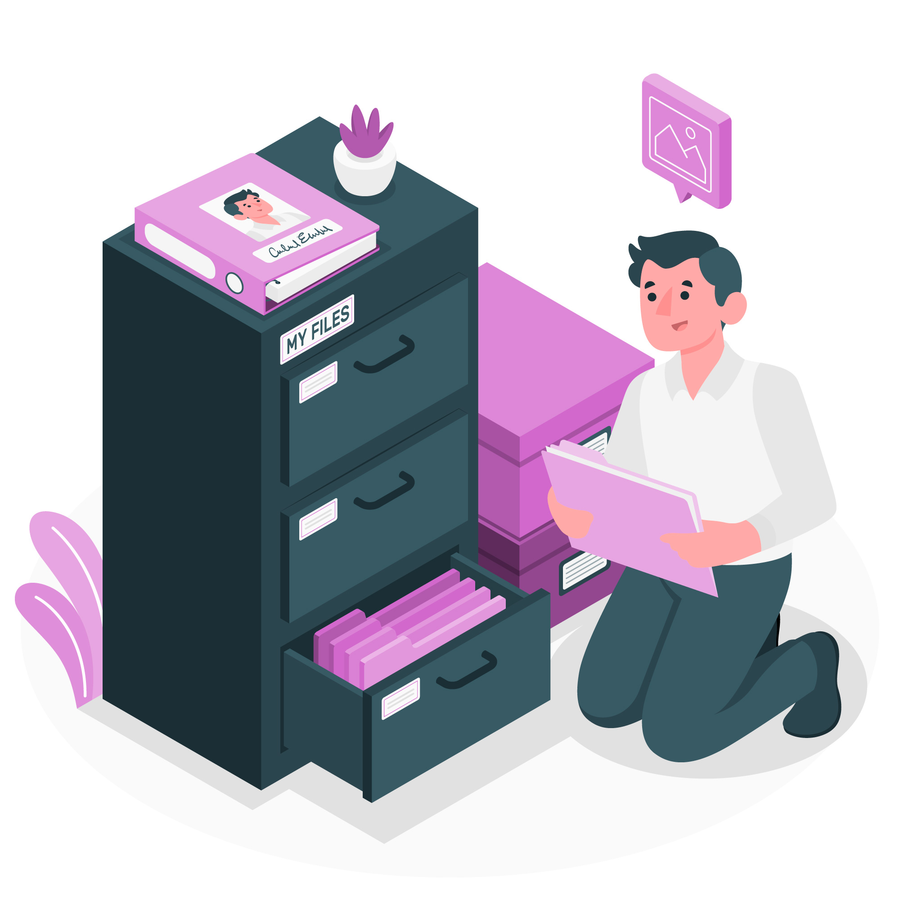

Program Unggulan

Jaringan Komunitas
Membangun database dan platform komunikasi bagi pengelola klinik di seluruh Indonesia.
Seminar & Diskusi
Mengadakan seri webinar dan diskusi online mengenai topik-topik aktual terkait pengelolaan dan inovasi klinik.

Dokumentasi Praktik Baik
Mengumpulkan dan mendokumentasikan contoh-contoh praktik inovatif yang telah berhasil diterapkan di berbagai klinik.